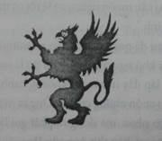

Jake chưa từng đi xe limousine. Cậu chưa bao giờ tưởng tượng ra kích thước chính xác của chiếc xe. Cậu có cảm giác như mình đang ở trong bụng một chiếc máy bay phản lực màu đen bay sát mặt đất.
Chiếc limousine lướt qua những đường phố chật hẹp ngoằn ngoèo của London. Xe bóp còi nhặng lên, một vài khách bộ hành giơ nắm đấm dứ dứ theo chiếc xe khổng lồ. Họ đang trễ giờ.
Jake tì má vào cửa kính xe nhuộm đen. Cậu cố liếc ra bầu trời.
“Đừng lo”. Kady ngồi kế bên lên tiếng. Tai đeo máy iPod, cô nói hơi lớn. “Em không bỏ lỡ hiện tượng nhật thực đâu mà.”
Kady lại chuyển sự chú ý sang chiếc gương tí tẹo trong lòng bàn tay.
Cô soi gương lần nữa sau cả buổi sáng loay hoay thử nghiệm đủ kiểu trong phòng tắm khách sạn, từ son bóng; kem dưỡng da, đến keo tóc, màu mắt, kẹp lông mi, máy sấy tóc... và cả một thứ gì đó để lại một thứ bụi lấp lánh trên nền đá hoa của phòng tắm. Và, giống một nhà khoa học thực thụ, Kady chẳng bao giờ làm dối công việc của mình.
Jake lờ chị mình đi, quan sát bầu trời. Mặt trời nhìn qua một cửa sổ nhuộm màu chỉ còn là một màu vàng thăm thẳm. Mặt trăng đã chờ đợi và sẵn sàng để bắt đầu lướt theo một quỹ đạo đã định sẵn ngang qua mặt trời, biến ngày thành đêm.
Đầu gối trái của Jake cứ nhấp nhỏm đầy phấn khởi. Cũng hơi lo lắng nữa.
Có một ảnh hưởng khác, cũng gần như không thể ngăn cản nổi, như chị cậu vậy.
Gần chân trời, những đám mây đen chất cao. Ánh chớp lóe lên từ sâu tận trung tâm một cơn giông đang đến. Đó là một cuộc đua với thời gian. Nếu cơn giông che khuất cảnh nhật thực, Jake sẽ tan nát cõi lòng mất.
Chiếc limousine ngoặt một khúc cua gấp. Lốp xe ré lên. Jake bị hất ra xa khỏi cửa sổ. Đá khua leng keng trong ly pha lê. Một cánh tay phốp pháp chụp lấy Jake và ấn cậu vào chỗ ngồi.
Một giọng ồm ồm trách mắng bằng giọng Anh nuốt chữ đặc sệt. “Bạn trẻ, nếu cậu muốn ngắm, có lẽ tôi có thể giúp trước khi cậu tự làm gãy cổ mình.”
Jake hầu như đã quên ông Morgan Drummond cùng đi chung xe với mình, với khổ người của ông thì đó là một điều khá bất ngờ. Thân hình ông lấp đầy nửa trước khoang hành khách của chiếc xe. Người ông cuồn cuộn những cơ bắp. Ông ta mặc một bộ com lê sọc đen cài nút chéo nhau, mà đúng ra phải gọi là một cái lều com lê mới xứng, ấy vậy mà bắp thịt ông vẫn làm vải căng lên theo bất kì một cử động nào. Ông nhìn giống như một hạ sĩ cảnh sát mũi nhọn hơn là trưởng ban an ninh của Bledaworth Sundries and Industries, Inc., đơn vị tài trợ duy nhất cho triển lãm về Maya.
Drummond nghiêng người về trước. Ông với ngón tay mập mạp của mình tới chỗ hàng nút bấm ngay sát khuỷu tay của Jake và nhắn một nút. Mái che trong veo của chiếc limousine trượt ra. Qua tấm kính, bầu trời hiện ra.
Khi chiếc limousine lướt ngang qua một chiếc xe buýt hai tầng, các hành khách ở tầng trên liếc xuống; nhìn vào trong chiếc limousine bên dưới. Jake cũng chăm chú nhìn lên trên, những khuôn mặt họ trông như những con cá vàng trong bể cá. Thấy những bàn tay chỉ trỏ, Jake vẫy tay lại; nhưng không ai trả lời.
“Kính cách ly,” Morgan Drammond giải thích. “Họ không thể thấy cậu.”
Người đàn ông to béo lún trở lại vào bóng râm của chiếc ghế. So với những người có thân hình đồ sộ đến thế, ông có khả năng chìm lẫn khác thường. Jake để ý có một tia sáng nhỏ lóe lên trong bóng tối khi ông Drummond dựa ra sau. Nó phát ra từ cái kẹp cravat của ông. Nó là một miếng kim loại bằng hợp kim để đúc súng sáng loáng, miếng kim loại nọ đúc hình biểu tượng của công ty Bledsworth Sundries and Industries.

Griffin - một con sư tử đầu chim.
Một con quái thú thần thoại với cánh chim và đầu đại bàng, với mình, đuôi và móng vuốt sư tử. Nơi mắt là hai viên ngọc đen, con quái thú chồm lên như sẵn sàng xé xác con mồi đang kinh hoảng của mình ra thành nhiều mảnh. Một số người cho rằng nó chính là biếu tượng của cách thức kinh doanh của tập đoàn này: tấn công kẻ yếu và nuốt chửng họ.
Jake đã đọc tài liệu tìm hiểu về tập đoàn này trong suốt chuyến bay từ Connecticut đến Lon don. Không ai biết rõ công ty được thành lập khi nào và ở dâu. Người ta bóng gió là những thứ “kĩ nghệ và tạp phẩm” của họ đã vươn ra từ tận thời Trung cổ. Người ta đồn rằng đỉnh Biedsworth khởi đầu sự nghiệp của họ bằng cách bán những liều thuốc dỏm để phòng bệnh dịch đen. Cùng một cách như vậy, họ cũng là người thu thập xác chết của các nạn nhân, chất đống lên xe bò và bán thanh lý những phần thân thể nạn nhân. Dù thật hay không thì nhà Bledsworth cũng đã bước khỏi thời kỳ tăm tối với nhiều vàng hơn cả vua nước Anh. Giờ họ được xem là một dòng họ danh giá, sở hữu cả một dãy nhà ngay trung tâm tài chính của Blackiriar.
Jake ngồi thẳng dậy và lấy giọng. Cậu thốt ra câu hỏi cứ lởn vởn mãi trong đầu từ khi vừa đáp xuống London, “Thưa ông Drummond, vì sao công ty ông lại tài trợ cho buổi triển lãm ở bảo tàng?”
Chỉ có mấy tiếng lẩm bẩm nặng nề trả lời cậu, nghe có vẻ như ông chẳng hài lòng với câu hỏi của cậu chút nào. Nhưng ngay cả Kady cũng hạ thấp cái gương nhỏ của mình và bỏ một bên tai nghe iPod ra để nghe câu trả lời.
Morgan Drummond thở dài. “Tổ chức buổi triển lãm này đắt đỏ lắm. Thêm bảo vệ, an toàn điện... công ty tốn cả một gia sản chỉ để thuyết phục chính phủ Mexico cho phép đưa kho báu quốc gia này ra khỏi quốc gia của họ.”
Từ giọng điệu của mình, rõ ràng ông không vui vẻ gì khi công ty ông phải bỏ ra quá nhiều tiền cho những thứ phù phiếm như vậy.
“Vậy sao công ty vẫn làm ạ?” Jake hỏi.
Drummond cúi sát người hơn. “Ông Bledsworth nhất quyết làm. Và không ai dám làm trái ý ông Bledsworth.”
Jake nhăn mặt. Cậu đã đọc tất cả về thói quen ẩn dật của vị chủ tịch tập đoàn: Ngài Sigismund Oliphant Bledsworth IX.
Ở tuổi chín mươi của mình, người đàn ông mang họ Bledsworth này đại diện cho thế hệ thứ chín của dòng họ - nhưng không lập gia đình, cũng không có con cái gì, ông có thể là người cuối cùng của dòng họ này. Ông Sigismund Oliphant Bledsworth IX chỉ có một vài bức ảnh.
Jake chỉ tìm được một tấm duy nhất trên máy vi tính, chụp khi ông còn khá trẻ: một người cao gầy trong bộ quân phục Anh. Giống như tổ tiên thời Trung cổ của mình; ông cũng mang lời đồn tai tiếng trong quá khứ - những câu chuyện về việc ăn cắp những bức tranh quý từ Pháp và Đức trong suốt thời chiến tranh hỗn loạn. Ông cũng đã từng đóng quân ở Ai Cập. Nhưng sau chiến tranh, tất cả mọi sự xuất hiện của người đứng đầu Bledsworth Sundries and Industries đều mất hút. Ông trở nên giống ma nhiều hơn người.
Chân mày Jake nhíu lại. “Nhưng ông Bledworth hứng thú gì tới chuyện tổ chức buổi triển lãm này chứ?”
“Cậu thực sự không biết à?” Ông Morgan Drummond hỏi.
Jake nhún vai quay sang chị mình, sau đó lại quay sang người đàn ông to béo nọ. “Thưa không.”
“Ông Bledsworth cảm thấy buộc phải làm vậy. Một món nợ phải trả.”
“Món nợ?"
“Với cha mẹ cậu.”
Không khí trong xe đột nhiên trở nên ngột ngạt hơn. Jake cảm thấy thật khó thở.
Ông Drummond dựa lưng vào ghế mình và chìm vào bóng râm. "Anh bạn nghĩ ai là người tài trợ cho chuyến đi khai quật những cổ vật của người Maya của cha mẹ cậu? Ai là người phái họ đến đó đầu tiên?”
Jake cau mày. Ông Bledsworth? Có thật không? Ông chủ bí ẩn của tập đoàn Bledsworth Sundries and Industries đã tài trợ cho chuyến thám hiểm của cha mẹ mình lên đỉnh Maya, Ngọn Núi xương? Tại sao?
Chiếc limousine giảm dần tốc độ, người tài xế gọi từ đằng trước xe. “Chúng ta đến bảo tàng rồi, thưa ngài"
Jake và Kady vừa bước ra khỏi chiếc limo tối om thì ánh đèn pha và đèn flash của máy chụp hình lập tức lóe lên không dứt. Jake ngỡ ngàng lùi về một bước, nhưng cậu chẳng còn đường rút nữa.
Đằng sau cậu, ông Morgan Drummond vươn cả thân người đồ sộ dậy, đứng như một bức tường thành.
“Đi tiếp,” ông thì thầm trong hơi thở. Drummond lùa Jake và Kady đi qua đám phóng viên đứng đầy hành lang trước cửa bảo tàng. Đội ngũ báo chí và những người hiếu kỳ bị giữ lại sau hai lằn dây nhung đen chăng quanh thảm đỏ. Phía trước, Bảo tàng Anh quốc nhô lên sau hai cột trụ đá hoa cương, trông như một mái vòm nhà băng khổng lồ. Một biểu ngữ cực lớn giăng ngang qua mấy cây cột; trang trọng thông báo buổi triển lãm.
"Những kho báu của người Maya ở Tân Thế Giới". Jake để ý thấy rất nhiều người đeo kính đặc biệt để quan sát nhật thực sắp xảy ra.
Cậu nhìn lên trời. Đáng ra cậu phải biết rõ hơn mới phải. Mặt trăng sắp bắt đầu ăn mặt trời. Quầng sáng gây mù chiếu vào mắt cậu. Cậu nhìn đi chỗ khác trước khi nó làm tổn hại thị lực mình. Ở phía nam, một chùm tia sáng chớp lên, tiếp theo sau là tiếng âm vang của sấm. Cơn bão vẫn đang hoành hành dọc theo sông Thamo và đe dọa xóa sạch cảnh tượng hiếm thấy này.
“Chúng đó hả anh?" Một quý bà lên tiếng. Giống cha mẹ như đúc.” Và nhìn bộ đồ đáng yêu kìa.”
"Giống, như những nhà thám hiểm nhỏ vậy". Một tiếng cười khác vang lên.
Jake bắt đầu để ý bộ đồ của mình. Ưu đãi của tập đoàn Bledsworth, bộ đồ được cắt may tại một hiệu âu phục cao cấp trên đường Savile Row, nổi tiếng về đồ may đo. Jake mặc quần đi săn và áo sơ mi tay dài, tất cả đều bằng vải kaki nâu, cùng với một áo vest với túi khắp nơi, có cái dùng dây kéo, có cái dùng nút; lại có cái được lồng trong túi khác. Cậu lại mang một đôi giày đi bộ đường dài bằng vải Goretex không thấm nước và một ba lô cùng loại. Họ muốn cậu đội mũ đi săn nữa nhưng cậu đã từ chối.
Kady yêu chiếc mũ ấy lắm. Nó thật ngộ nghĩnh trên đầu cô. Nhiều ánh đèn flash của máy chụp hình lóe lên. Cô nghiêng người, duyên dáng đặt ngón tay lên một cái nút buộc trên mũ.
Jake đảo mắt và tiếp tục đi về phía bảo tàng.
Những tiếng la hét và cười nói trở nên nhòe lẫn đi. Cậu chỉ muốn đi vào trong, tránh xa khỏi mọi thứ náo loạn này.
Tập đoàn Bledsworth Sundries and Industries cùng với bảo tàng đã sắp đặt tạo một sự kiện truyền thông hoành tráng trên khắp các mật báo, truyền hình và cả áp phích quảng cáo trên xe buýt và tàu điện. Tất cả đều quảng bá cho cuộc triển lãm. Câu chuyện về sự mất tích của cha mẹ Jake từng là một tin chấn động, một câu chuyện có cả vàng bạc, bọn cướp cạn và những nhà khảo cổ bị thảm sát. Những tờ báo một lần nữa lại thổi phồng nó lên. Mọi người rồi cũng sớm biết về hai đứa trẻ mồ côi của dòng họ Ransom. Giờ thì hai đứa trẻ ở đây rồi, ngay đúng buổi khai mạc triển lãm, một sự kiện như thế khiến tất cả mọi người đều phải chạy đến với máy chụp hình trong tay.
Ông Morgan Drummond đứng sát vai Jake, vẫy tay bảo Kady đi tiếp. Giọng ông oang oang giữa đám đông, “Chúng tôi đang trễ! Sẽ còn thời gian chụp hình sau sự kiện mà!”
Những tiếng xì xào thất vọng đuổi theo bước chân họ. Nhưng Jake để ý cách ông Drummond liếc nhìn một trong số những người đứng xem, chằm chặp dán mắt vào anh ta. Ở sát chỗ dây thừng có một người đàn ông trông như con cóc, mặc đồ tuyền một màu xanh lá, ngồi xổm ngoạm một chiếc bánh rán. Mắt người đàn ông nọ hoàn toàn bị che lấp dưới lớp chân mày rậm rạp. Môi ông phùng lên, đẩy những hạt đường rây li ti như bột. Ông ta cũng có một chiếc máy chụp hình quanh cổ, nhưng chỉ treo để đó. Ông không màng đưa nó lên khi họ đi ngang qua.
Ông khẽ gật đầu với Drummond trong khi ông này cứ mãi giục Jake và Kady.
Một lúc sau, Jake và Kady băng qua dưới biểu ngữ và bước vào bên trong bảo tàng. Không kể những vệ sĩ trong đồng phục màu xanh ra, hành lang khá im ắng. Kady liếc nhìn ra ngoài với ánh mắt thèm khát.
“Có một buổi lễ cắt băng khánh thành trong cung điện Nữ hoàng Elizabeth,” Morgan Drummond nói khi dẫn họ đi ngang qua quầy quà tặng; băng qua tầng nhà lát đá hoa bóng loáng.
“Còn chụp hình nữa không ạ?” Kady vừa hỏi vừa mở chiếc gương nhỏ cùa mình với kỹ thuật điêu luyện của những người diễn ném dao.
“Chỉ còn bản tin truyền hình và tờ báo London,” Drummond nói. “Bảo tàng đăng cai tổ chức một sự kiện độc quyền, giới hạn trong vòng những đối tác lớn nhất mà thôi. Và thậm chí họ còn phải bỏ ra một khoản chi phí khá lớn để được tham dự buổi cắt băng khai mạc.”
“Công ty có thu được gì từ số tiền phát sinh đó không?”
Drummond cau mày nhìn Jake như thể cậu vừa hỏi một câu hỏi ngu ngốc vớ vẩn lắm. “Dĩ nhiên là có, chúng tôi sẽ thu được một khoản tiền vừa đủ để hòa vốn với việc triển lãm này.” Một sự ngạo mạn nào đó chen vào nói của ông. “Anh bạn nghĩ vì sao hai người được mời đến đây? Những thứ đổ cổ bụi bặm kia không thể lôi kéo sự chú ý của đám đông được. Những câu chuyện mới kéo người ta đến cửa. Chẳng hạn như... à ờ, bi kịch xung quanh...” Người đàn ông to béo bỗng nhiên nhận ra mình đang nói chuyện với ai. Ông ta trở nên ấp úng như một đứa trẻ nhỏ. Ông ta còn chút lễ độ để ngượng ngập đỏ bừng đến tận mang tai và vờ dựng cổ áo lại cho thẳng thớm.
Mặt Jake đỏ bừng lên, nhưng không phải vì bối rối. Bàn tay nắm chặt lại thành một nắm đấm khi cậu bỗng ý thức được toàn bộ mọi sự. Lời mời hai đứa đến đây không phải để công bố và vinh danh những thành tựu của cha mẹ cậu, mà là để lợi dụng tấn bi kịch của họ: biến những mất mát của họ thành những đồng tiền lạnh tanh và cứng ngắc cho tập đoàn Bledsworth Sundries and Industries. Jake bất giác cảm thấy mình vừa ngu ngốc và tức tối. Cậu và chị gái đã bay cả một quãng đường dài đến London chỉ để múa may như những con rối trước đám đông, để họ bán được nhiều vé hơn.
Kady dường như không phiền lòng trước sự thực đó. Cô phóng lên phía trước, háo hức trước ánh đèn flash máy ảnh chói lòa và sự quan tâm của công chúng.
“Đi qua đây,” Drummond nói và giữ một cửa cho họ.
Khi Jake đi qua, một cảnh tượng tuyệt vời mở ra trước mắt. Bên trong là một không gian rộng lớn trải dài gần hai mẫu Anh, tất cả đều được lát cẩm thạch.
“Cung điện của Nữ hoàng Elizabeth,” ông Drummond thông báo. Ông ta thọc tay vào túi lấy ra máy cặp kính tròng đen. “Kính quan sát nhật thực. Hai cô cậu nên đeo nó vào"
Khi Jake đeo kính bảo hộ vào, cậu vẫn tiếp tục băng qua tầng nhà. Những chái nhà của viện bảo tàng bao khắp bốn mặt sân. Đi hết những bậc cầu thang lại đến một tầng khác. Nhưng điều thật sự thu hút sự chú ý của Jake là cái mái nằm ngay trong sân. Nó được cấu tạo từ những mảnh kính trong hình tam giác, như thể đang lơ lửng trôi trên đầu cậu, nhẹ tênh và sáng rực ánh mặt trời.
Jake nghểnh cổ nhìn lên mái nhà kính. Cặp mắt kính bảo vệ nhuộm màu cho phép cậu nhìn thẳng toàn cảnh nhật thực mà không sợ bị hỏng mắt. Mặt trăng đã ăn nửa mặt trời. Hiện tượng nhật thực toàn phần không bao lâu nữa sẽ kết thúc.
Sấm chớp ầm ầm. Jake quay người nhìn về phía nam. Phân rìa cơn bão đã kéo vào tầm mắt họ.
Nó còn nấn ná đủ lâu không đây?